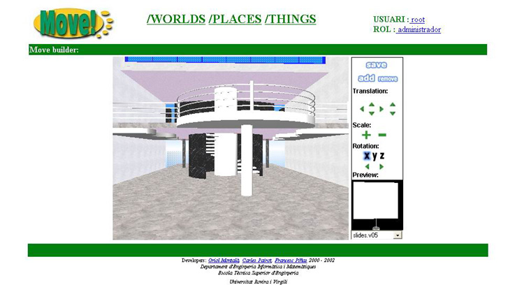
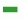
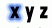
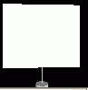
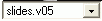

3.13 Builder
La Tool Builder ens permetr� personalitzar els nostres Places per tal que tinguin l'aspecte que realment desitgem.
Podrem afegir dos tipus d'objectes diferents al Place:
- objectes est�tics: Objectes tals com cadires, taules, l�mperes, etc, que seran carregats sempre al Place un cop afegits.
- objectes din�mics: Objectes tals com pantalles de transper�ncies, r�dios, equips de v�deo, etc, els quals correspondran als models 3D de les Tools, i que seran carregats din�micament al Place, depenent de si la Tool a la que representen est� activa o no.
- links: Objectes que ens permetran anar d'un Place a un altre.
L'aspecte del Builder �s el seg�ent:

Per una banda tenim l'entorn 3D que representa el nostre Place.
Per altra banda tenim els controls que ens ofereix la Tool per tal d'interectuar amb el Place.
A continuaci� descriurem breument tot el que ens ofereix el control del Builder:
guarda els canvis efectuats en el Place
afegeix al Place l'objecte que tenim seleccionat
elimina del Place l'objecte que tenim seleccionat
permet moure l'objecte amunt-avall, esquerra-dreta
permet apropar o allunyar de nosaltres l'objecte
augmenta el tamany de l'objecte

disminueix el tamany de l'objectepermet realitzar una rotaci�, negativa o positiva, de l'objecte sobre l'eix de coordenades

que tenim actualment seleccionat
pre-visualitzaci� de l'objecte que tenim actualment seleccionat
llista d'objectes que podem afegir al nostre Place